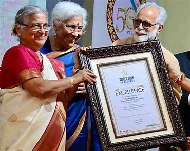
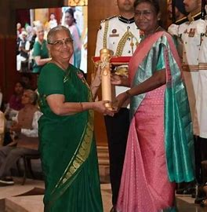
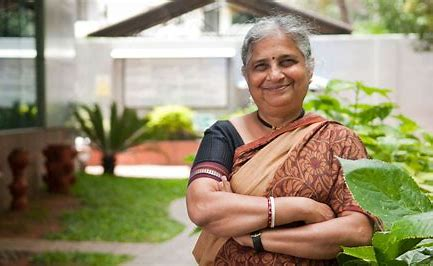

About Sudha Murty
Sudha Murty is an Indian social worker, teacher, and writer. She is known for her philanthropic work, particularly in the fields of education and healthcare. Born on August 19, 1950, in Shiggaon, Karnataka, India, Sudha has dedicated her life to serving others.
She has written several books in Kannada and English, and has been recognized for her contributions to literature and social service.
Her work has inspired countless individuals, and her selflessness has made a significant impact on the lives of many.
Achievements and Awards
- Padma Shri award (2006)
- Raja-Lakshmi Award (2004)
- Attimabbe Award (2000)
- Many more...
Inspirational Quotes
"The biggest adventure you can take is to live the life of your dreams."
"The best way to find yourself is to lose yourself in the service of others."
"Believe you can and you're halfway there."
"The greatest glory in living lies not in never falling, but in rising every time we fall."
Gallery


